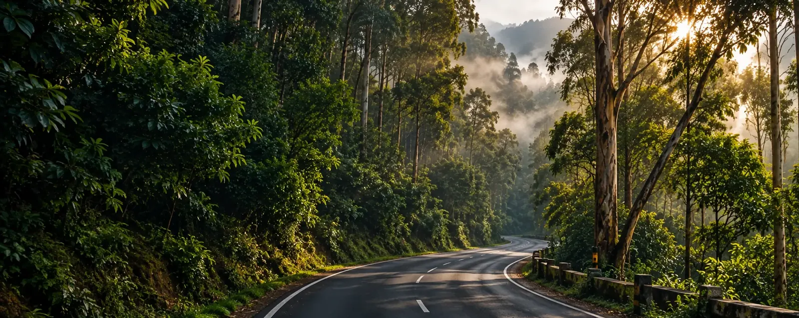

Coimbatore to Kodaikanal Cab: Fare, Distance and How to Book
Quick answer: it's about 180 km and 4 to 5 hours by private cab, from ₹5,000 one-way. Best for tourists, families and groups who want a local driver on the ghat climb.
Fare sheet
Coimbatore to Kodaikanal Taxi Fare and Cab Fare
These are one-way starting prices for our Coimbatore to Kodaikanal car rental with driver. Round trips and longer hires get priced once we have your dates.
Etios
Sedan · up to 4From ₹5,000Book Etios →Tavera
SUV · up to 7From ₹7,000Book Tavera →Qualis
SUV · up to 7From ₹7,000Book Qualis →Innova · Most booked
SUV · up to 7 · best on the ghatFrom ₹7,500Book Innova →Jeep
Open-top · up to 6From ₹7,500Book Jeep →Tempo Traveller
Van · 9–17From ₹9,000Book Tempo →20-Seater Coach
Coach · up to 20From ₹10,000Book Coach →Round trip
Same cab both waysBetter per-km rateGet quote →The long haul, leg by leg
Coimbatore to Kodaikanal: Which Route Should You Take?
Going from Coimbatore to Kodaikanal by car means one road all the way, though it feels like three: flat plains first, then foothills, then a proper mountain climb.
- ~90 min
Coimbatore to Palani
The road runs southeast through Palladam, Tiruppur and Dindigul on open highway. It's the flattest, quickest part of the day, so leave early and bank some time here.
- ~45 min
Palani to the Ghat Base
The Palani Hills start to rise and the road tightens. Most passengers eat breakfast here before the climb.
- ~90 min
The Kodaikanal Ghat Section
Roughly 20 km of hairpin bends through forest. Mist and wet tarmac make this the part where you'll be glad your driver has done it hundreds of times.
- Arrival
Kodaikanal Town
The road finally opens out beside Kodaikanal Lake. Then we drop you at the cottage or hotel gate.
How Far Is Coimbatore to Kodaikanal?
The Coimbatore to Kodaikanal taxi distance is about 180 km, and most of that is easy highway up to Palani. The final 20 km of switchbacks do nearly all the climbing to 2,100 metres, so the last leg feels longer than the map suggests.
How Much Time Does the Journey Take?
Expect 4 to 5 hours without stopping, nearer 6 once you add breakfast near Palani and a few photo breaks. Leave early. You'll clear Coimbatore's traffic quickly and have the ghat road to yourself before the afternoon rush.
Choose your way
Coimbatore to Kodaikanal Cab or Taxi: How Should You Travel?
People weigh four options: cab, bus, train plus taxi, or self drive. Our Coimbatore to Kodaikanal cab service is the one tourists, families and groups book most.
Cab
Private, door to door, and you set the stops. The driver waits while you eat, rest or photograph the view on the way up.
Bus
Cheapest on paper, but you live by its timetable and share the cabin. Plenty of travellers swap to a cab just for the ghat climb.
Train + Taxi
Trains stop at Kodai Road or Palani, never in the town. You'll still need a Coimbatore to Kodaikanal taxi for the climb.
Self Drive
Fine if you already know the ghat road. After a long journey in, though, the hairpins are tiring, and a driver takes them for you.
Can You Book a One-Way or Round-Trip Cab?
One way
Pick a one way taxi from Coimbatore to Kodaikanal when you only need the drop and plan to leave by other means, or later.
Round trip
One cab and one driver throughout, with the return date agreed up front. The per-km rate usually beats two separate one-way bookings.
Fly in, drive up
Coimbatore to Kodaikanal Taxi from the Airport: Is It Available?
Yes, it's available. Coimbatore International Airport (CJB) is where a large share of our passengers start. Your driver follows the flight, so a late landing doesn't leave you stranded at arrivals. We run Coimbatore to Kodaikanal pickup from the airport, the railway station or any address in the city, and we drop you at your cottage or hotel door. Going home works the same way, with a Kodaikanal to Coimbatore drop at the airport or station.
Beyond the transfer
Can You Book a Coimbatore to Kodaikanal Tour Package?
Yes, we offer them. Our tour packages from Coimbatore to Kodaikanal bundle the cab with a stay and sightseeing. Most people pick the 2-Day Kodaikanal Getaway: pickup in Coimbatore, one night in town, and a full day at the lake, Coaker's Walk and Pillar Rocks.
 1-Day PackageTransfer + local sightseeing
1-Day PackageTransfer + local sightseeing
 2-Day PackageMost booked
2-Day PackageMost booked
 3-Day PackageTransfer + stay + sights
3-Day PackageTransfer + stay + sights
Travelling with a big group? Look at the group tour package, or ask us for a group quote on the Coimbatore to Kodaikanal route.
Once you're there
Can You Explore Kodaikanal Sightseeing by Cab?
Yes, it works well. Coimbatore to Kodaikanal sightseeing is simplest with one cab throughout: the car that brought you up spends a full day on local stops, at whatever pace suits your group.


What Are the Best Places to Visit in Kodaikanal?
Plan around the weather
Best Time to Travel to Kodaikanal
When to go for a Coimbatore to Kodaikanal trip comes down to rain and crowds. Here is how each stretch of the year feels, on the road and in town.
Summer
Pleasant hill weather and the biggest crowds. For April to June, book a few days ahead.
Monsoon
Heavy rain hits the ghat road and small landslides get reported now and then. Start early and allow extra time.
Winter
Cool and clear, with long mountain views. Mornings turn chilly, so bring a light jacket.
Book in minutes
How Can You Book a Coimbatore to Kodaikanal Cab or Taxi?
Tourists can book a Coimbatore to Kodaikanal cab or taxi with us on WhatsApp or by phone. We're a local travels operator, so we arrange the transport, the pickup and the drop, and quote the fare before you commit.
- PickupAirport, railway station or any address in Coimbatore
- DateTravel date, plus the time you'd like to be picked up
- VehicleSedan, SUV or tempo traveller, based on your group size
- ConfirmWe reply with your driver and fare the same day
4.8 ★ · 120+ reviews
What Travellers Say About This Route
Landed at Coimbatore airport and the driver was already waiting with a name board. No haggling, no surprise charges — the fare matched exactly what was quoted on WhatsApp.
We had two kids with us and the driver was happy to stop for breakfast near Palani and again for photos on the ghat road. Made the 4-hour climb feel easy.
Booked a Tempo Traveller for our group of 10 the same evening we messaged. Driver knew the ghat bends well, which mattered more than I expected.
Find us
Where Are We Located?
Cottages Kodaikanal, Near Zion School Junction, MM Street, Lawsghat Road, Kodaikanal - 624101. Driving the Coimbatore to Kodaikanal route yourself? The directions link below will get you here, or let our driver take the climb.
Open in Google Maps · Directions from Coimbatore · Call +91 75023 45777
Where Can You Start Your Trip From?
Questions
Frequently Asked Questions
Distance & journey
Roughly 180 km via Palani. The Coimbatore to Kodaikanal road distance usually means 4 to 5 hours by cab, longer in heavy traffic.
Either Pollachi or Palani, depending on the road your driver picks that day. Palani is the usual midway stop before the ghat climb, and the driver goes by whichever road has lighter traffic.
Most Coimbatore to Kodaikanal drives take 4 to 5 hours without stops. Add a breakfast and some photo breaks and you're nearer 5.5 hours, a bit more on festival weekends.
It can be driven, but we'd rather you arrive before dusk, because the hairpins are much easier to read in daylight. Give us your arrival time and we'll suggest when to leave.
Fare & booking
A Coimbatore to Kodaikanal cab starts at ₹5,000 for an Etios and ₹7,000 for a Tavera or Qualis. A Jeep or Innova is ₹7,500, a Tempo Traveller ₹9,000 and the 20-seater coach ₹10,000.
It is. Round trips usually get a better per-kilometre rate, because the same cab stays with you for the return and we don't have to price in an empty drive back.
To book a Coimbatore to Kodaikanal cab, send your pickup point, date and preferred vehicle on WhatsApp or call us. Your driver and fare come back the same day.
One day's notice usually works. For weekends, school holidays and festivals, book a few days ahead, which also gives you first pick of vehicles.
Airport & vehicles
Yes, and it's one of our busiest pickups. For Coimbatore to Kodaikanal travel, the driver tracks your flight, meets you at arrivals and drives you straight through.
The driver watches the flight status and moves the pickup to match, with no extra charge for reasonable delays. You don't need to call or rebook when a landing slips.
Sedans take up to 4 passengers, SUVs and Innovas up to 7, and tempo travellers carry groups of 9 to 17. Each Coimbatore to Kodaikanal cab comes with a driver who knows the hill road.
An SUV is the comfortable pick on the ghat bends, especially for families or anyone who gets carsick. Sedans cope fine too. Tell us who's travelling and we'll match the vehicle.
Packages
You can. One, two and three day packages tie your Coimbatore to Kodaikanal transfer to a stay and sightseeing, so one booking sorts everything.
Pickup in Coimbatore, one night's stay, and a full day at the lake, Coaker's Walk and Pillar Rocks. Rates depend on the vehicle, so send your group size and we'll quote exactly.

Ready for Kodaikanal?
Your Coimbatore to Kodaikanal cab is one call away, whether it's one-way, a round trip or an airport pickup.